DADA2026:6
Defence against the Dark Arts
Sixth topic - Comms [H7],
and Other networks [H8]
Hugh Anderson [Q]
July, 2026
The joys of industrial systems...

Where are we?
- Introduction (in May):
-
Warfare, with an indistinct enemy.
- Social Engineering (in May):
-
Examples - phishing, vishing, tricking. Human weaknesses.
- System Complexity:
-
Fight back with design principles, standards and formal methods.
- Crypto 1:
-
Traditional systems - substitution and permutation. (Pre 1976).
- Crypto 2:
-
(Post 1976) Asymmetric systems: OWF, computational complexity, hashes.
- IP Networks:
-
Layered structure designed for resilience, not security. Hardening the Internet.
- Other Networks:
-
Today we will look at other computer communication methods used. Hugh calls these the “OtherNets”. Like the core Internet protocols, these networks also were largely not designed with security in mind, and attempt to rely on security-by-obscurity. We will look at industrial and infrastructural systems, phone networks, car networks, GPS, the radio spectrum...
Outline
- Its not just the
Internet
- Othernets
- The radio spectrum
- Fighting
back
- Awareness, evaluation, consideration
- Padding oracle
attack for Lab2
- Padding, release of partial information
Its not just the Internet
Outline
- Its not just the
Internet
- Othernets
- The radio spectrum
- Fighting back
- Awareness, evaluation, consideration
- Padding oracle attack for Lab2
- Padding, release of partial information
Other networks [i7,i8]
All around us, things we depend on are built on less well known networks: Water in the taps, power, sewage, gas, oil, automated factories, security systems. They are characterized by:
- archaic protocols (Allen Bradley...), security by obscurity
- Developers who claim that “Our engineers/technicians would not tolerate passwords ”
- Languages that should have died years ago (Ladder languages built from relays and switches), and the claim that “Our engineers/technicians would not tolerate HLLs ”
- Radio links, no encryption, dial up and leased phone lines.
For example, your Phone (Android, iOS), the old wired phone network (exchanges are computers these days), embedded systems and PLC networks (in your plane, your car, your factory ), the wireless phone network (both wireless links and base stations). I can go on: Public utilities (dam control, power reticulation, sewage disposal using dial-up, radio links, SCADA, Allen Bradley...), Commercial systems (petrol pumps, cash registers, shop stocklist systems using dial-up, leased lines or backboned over Internet) - even our home networks (security, environment control...).
Othernet hacking scenario #1 [i9,i2,ctrl-i3,2,8,1]
SCADA (supervisory control and data acquisition) is everywhere. It controls Singapore’s water, gas pipelines, sewage, security systems and so on. Unfortunately security is seldom addressed.
- An angry man (now jailed) attacked the Maroochy Shire sewage control system (Queensland, Australia), and released a million litres of raw sewage into the environment.
- A sophisticated program may have damaged a fifth of Iran’s nuclear centrifuges. Stuxnet specifically targeted SCADA and Siemens PLCs, and was probably targetted at Iran.
Othernet hacking scenario #2 [3,4,ctrl-i5,ctrl-i6]
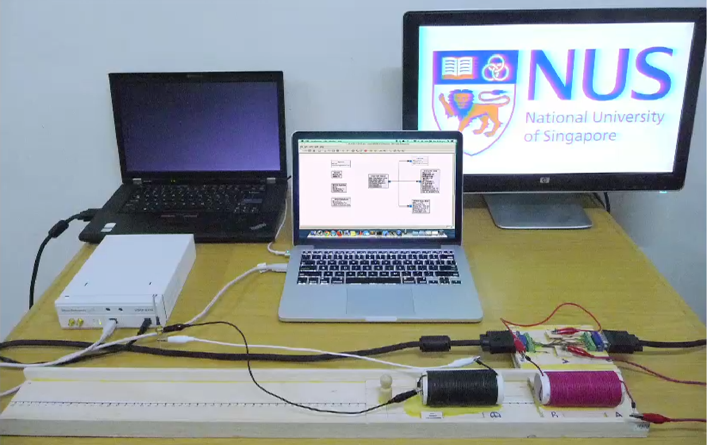
TEMPEST covers both methods to spy upon others and how to shield equipment against such spying. A student project a few years ago resurrected a screen image from the radiation from a cable.
Othernet hacking scenario #3
The CIA claim that there have been multiple instances of successful blackmail of power utility companies around the world. (Note that this may be part of a general strategy of convincing people the world is “dangerous”, so perhaps we should take it with a grain of salt). The idea is that the blackmailer threatens to turn off the power grid, and (according to the CIA) have turned off power to cities to demonstrate.
Two documented instances of similar activities:
- Russia’s gas utility control system being taken over for a short period, and also
- Disgruntled employees in the US hacked traffic light systems in LA to cause chaos
Othernet hacking scenario #4
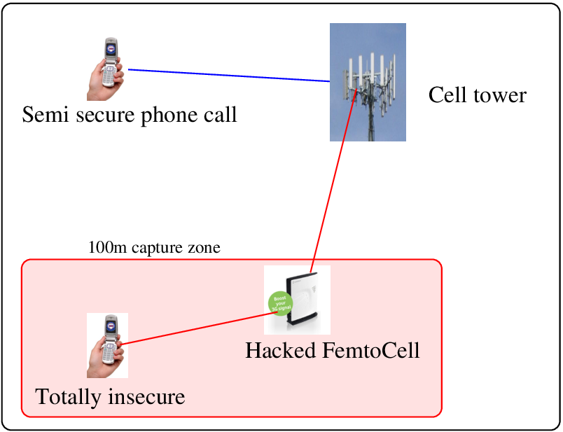
Vodafone’s SureSignal is a neat product which makes cell signals stronger in houses and buildings. It is a small cell base station, called a femtocell.
SureSignal was hacked in 2012. A hacked system can forge calls, record calls, and collect detailed data about the phone/SIM so it can be copied.
Othernet hacking scenario #5 [5]
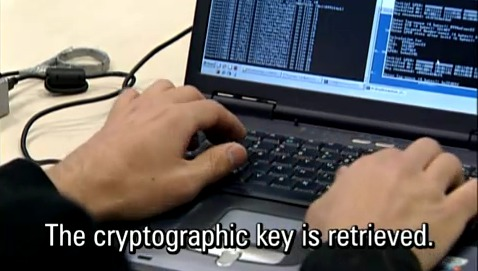
MIFARE Classic, a contactless smartcard widely used in Europe.
It uses a set of proprietary protocols/algorithms, that were reverse-engineered in 2007. It turns out that the encryption algorithms are already known to be weak (using only 48bits) and breakable.
London underground Oyster card, Malaysia Touch&Go, BMWs etc
Othernet info leaks, projects recently... [6]


Hardware hacking using $25 and $500 software defined radios, social engineering, inference...
Summary
| It seems like we cannot trust the machines! | ||
| Who knew? |
Not only routers, printers, servers, PCs, but also PLCs, control systems. In each of these complex systems, they are only as strong as their weakest link.
Taking the cases of Internets and othernets - There is no adminstrative centre for the Internet, little security (and no administration) on Othernets. Just organizations trying to make money, cutting corners.
Outline
- Its not just the
Internet
- Othernets
- The radio spectrum
- Fighting back
- Awareness, evaluation, consideration
- Padding oracle attack for Lab2
- Padding, release of partial information
Tools to access the radio spectrum...
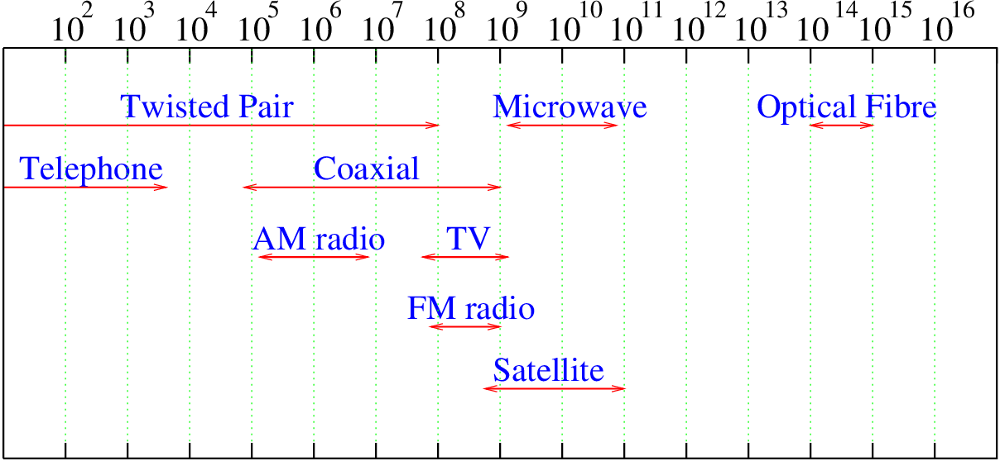
Hardware hacking using $25 and $500 software defined radios. A range from 1MHz to 5GHz.
Lets see what is at 1090MHz [9]
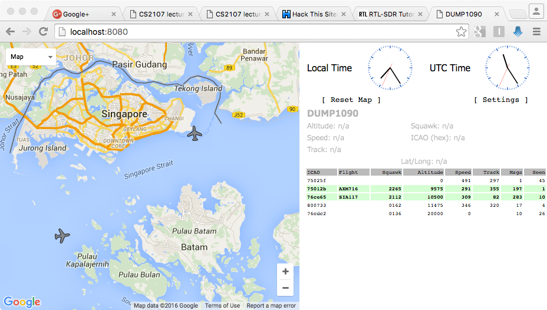
Radio signals all around us are supplying us with interesting information. ADS-B.
Phone man-in-the-middle
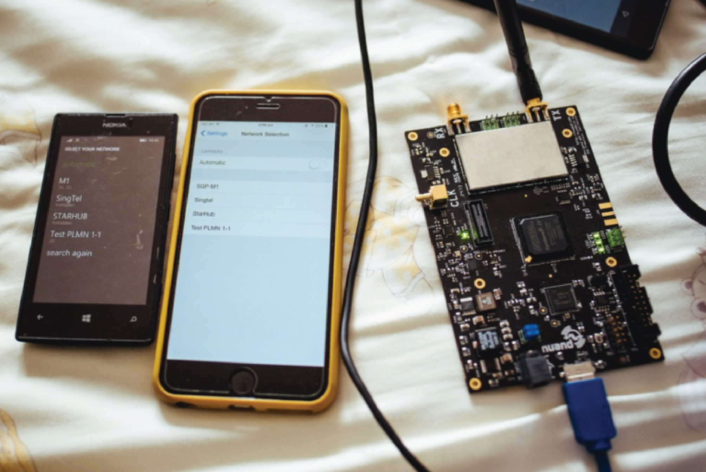
The SDR on the right is pretending to be a base station, the phones on the left can see it... With some care, you can make the phones associate to the SDR instead of Singtel/Starhub, and retrieve interesting information. This has been shown here using both GSM and LTE networks.
Students developed a social engineering SMS sequence...
NFC: more things to worry about: [7]

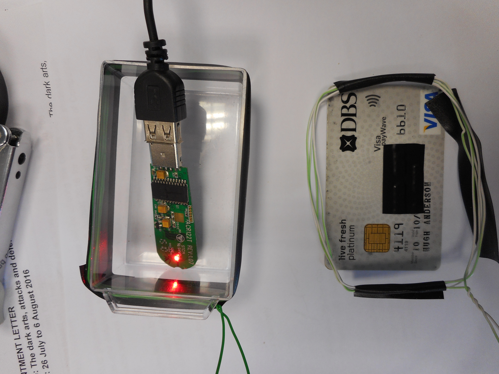
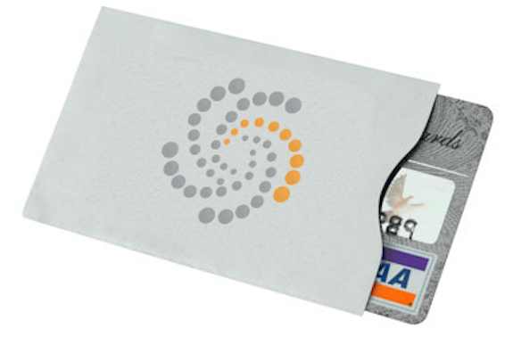
If we get time, Hugh will show you an example of this.
Not sure if this fixes the pokemon GO situation...
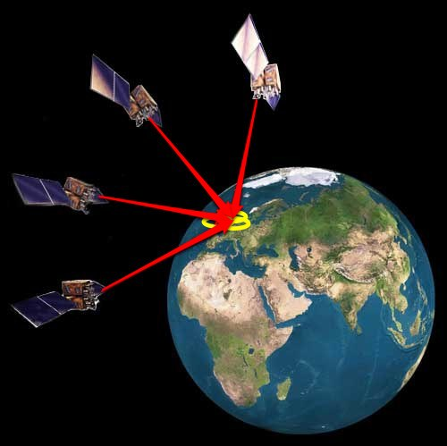
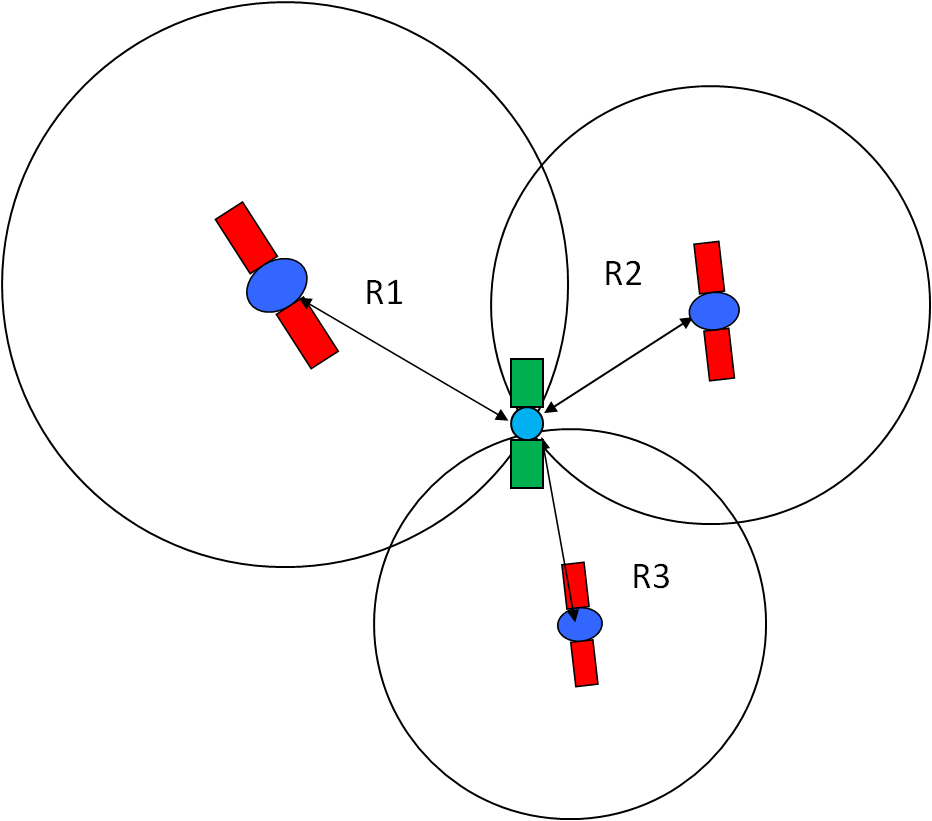
The satellites are synchronized in time, transmitting on-the-nanosecond signals, which are received in your phone.
The difference in time (signals travel at 300m/uS), can locate the phone to about 15m.
Othernet attack, simulate GPS...
Download the gps_sdr_sim from
https://github.com/osqzss/gps-sdr-sim
.
Get the latest ephemeris ffrom
ftp://cddis.gsfc.nasa.gov/gnss/data/daily/
.
(An ephemeris gives the positions of astronomical objects, in this case the satellites, which are decaying and moving about due to gravity variations).
ftp://cddis.gsfc.nasa.gov/gnss/data/daily/2016/brdc/brdc2160.16n.Z
Generate a simulated set of signals from the ephemeris, and a latitude and longitude...
./gps-sdr-sim -v -e brdc2160.16n -b 16 -s 2500000 -l -39.332079,175.342537
Hughs-MacBook-Pro:gps-sdr-sim-master hugh$ ls -al gpssim.bin
-rw-r--r-- 1 hugh staff 2999000000 Aug 4 09:11 gpssim.bin
Hughs-MacBook-Pro:gps-sdr-sim-master hugh$And then attach an SDR, and start sending it...
./tx_samples_from_file --args=\textquotedbl master_clock_rate=50e6\textquotedbl --file gpssim.bin \textbackslash
--type short --rate 2500000 --freq 1575420000 --gain 0 --repeatAttacks (and defences) are no different in Othernets
 |
 |
 |
 |
The diagrams above, of Interception, Modification, Interruption, and Fabrication, remind us of the routes taken.
Fighting back
Outline
- Its not just the Internet
- Othernets
- The radio spectrum
- Fighting
back
- Awareness, evaluation, consideration
- Padding oracle attack for Lab2
- Padding, release of partial information
Evaluation [ctrl-i3,X]
We should evaluate and manage this level of our systems in the same way as we assess and control our computer systems.
Assuming we had a system that made use of communication infrastructure, we should evaluate it’s security, do a risk assessment, and ensure we have appropriate controls.
For security controls for all U.S. federal information systems. It’s approach seems relevant to assessing any security issue, including ones like this. The framework includes:
- Technical issues include access control, audit and accountability, identification and authentication, and system and communication protection.
- Operational issues include awareness and training, contingency planning, incident response, maintenance and physical protection, and even personnel.
- Management issues include certification, risk assessment and so on.
Summary: Other networks
A range - We were reminded that the “Internet” and “IP protocols” are not the only communication mechanisms that we, and our computers, rely on. Many of our essential services (electricity, water, sewage) are still using ancient protocols and techniques. In addition, our factories, the GPS system, our phones, dongles to drive cars and so on, are all using communication methods and hardware designed in many cases 50 years or so ago.
Particular Nets - Specifically, we looked at ADS-B - the flight location broadcast system, GSM and LTE MiM attacks, messing about with NFC, and GPS - the global positioning system.
Fightback - The view here is that none of these systems require us to invent new ways of dealing with them. We can just start with an awareness that they exist, and then use standard evaluation and management tools. We saw the use of NIST 800-53 as a framework for analysis.
Padding oracle attack for Lab2
Outline
- Its not just the Internet
- Othernets
- The radio spectrum
- Fighting back
- Awareness, evaluation, consideration
- Padding oracle
attack for Lab2
- Padding, release of partial information
Bit and byte padding for block ciphers...
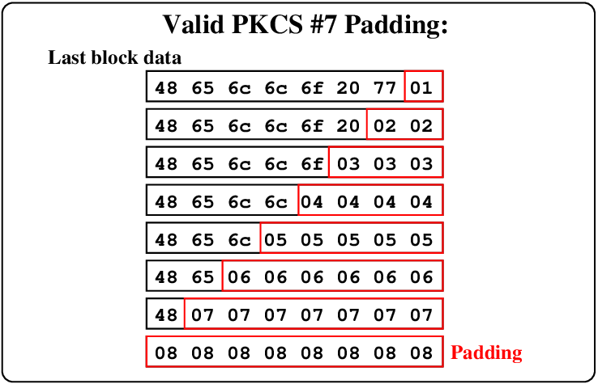
One technique is to add a single 1 bit, followed by enough 0 bits to fill out the block.
Another is the PKCS #7 paddings for the final block. Each byte is given as 2 hex digits.
CBC: encoding and decoding...
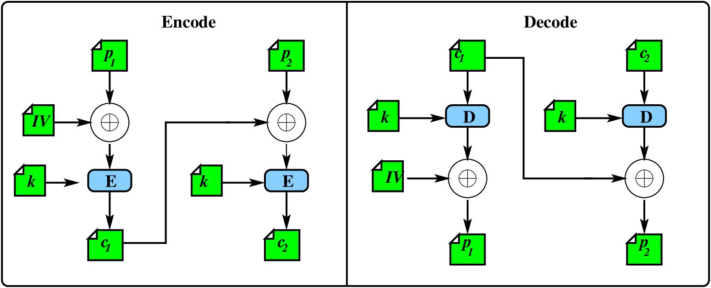
(...decode is decrypt, then XOR).
Note that when you are decoding, the final plaintext p_{2} is the decrypted ciphertext exclusive-ored with c_{1}.
If there was only one block, the final plaintext p_{1} is the decrypted ciphertext exclusive-ored with IV
Padding oracle...
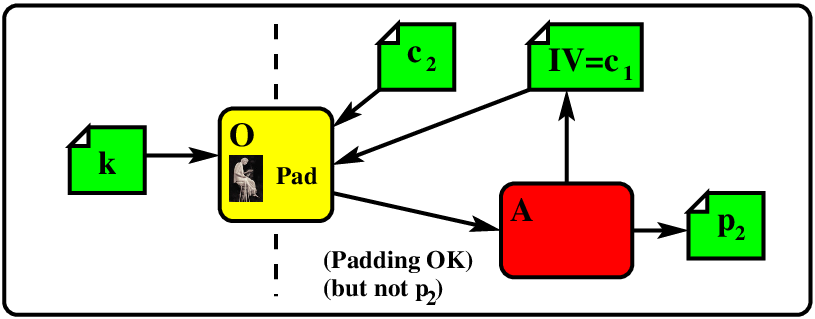
Imagine that you have a bit of software, that, given c_{1} and c_{2}, will tell you if the padding is correct in p_{2}. If the message was only one block long, given IV and c_{1} (as in the lab), it will tell you if the padding is correct in p_{1}. In general, given c_{n-1} and c_{n}, it will tell you if the padding is correct.
Is this realistic? Well, yes it is. When you send a padded, encrypted message to another system, after decrypting, the other system will check the padding, and if it is not valid, will fail immediately. Otherwise it will fail (or succeed) later.
Normal receiving software may leak the correctness of the padding. In the lab, we will give you a program that is a padding oracle.
Note also that an you can directly change each bit/byte of the final plaintext for p_{n}, because the attacker has control over the input c_{n-1} (or IV as in the lab).
Using the oracle in an attack...
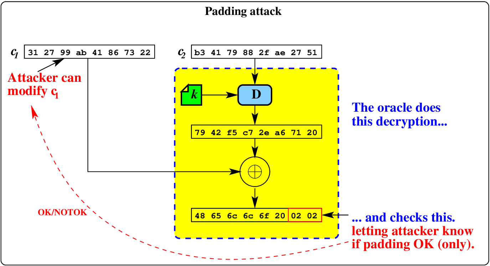
The oracle only learns if the last bytes
are correct - they could be 01, 0202, 030303, and so on.
The attacker starts by trying a series of values for the last byte of c_{1}:
Using the oracle in an attack...
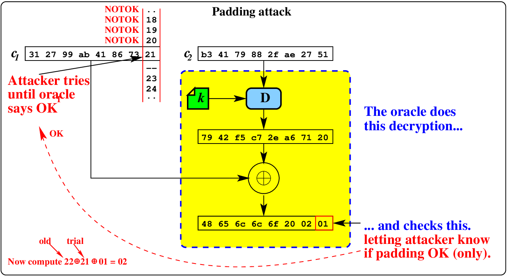
The attacker is trying values in the last
byte of c_{1} until
01 is the last byte. Oracle returns OK.
Attacker now sets the last byte
to 02, and tries for the second-last byte of c_{1}:
Using the oracle in an attack...
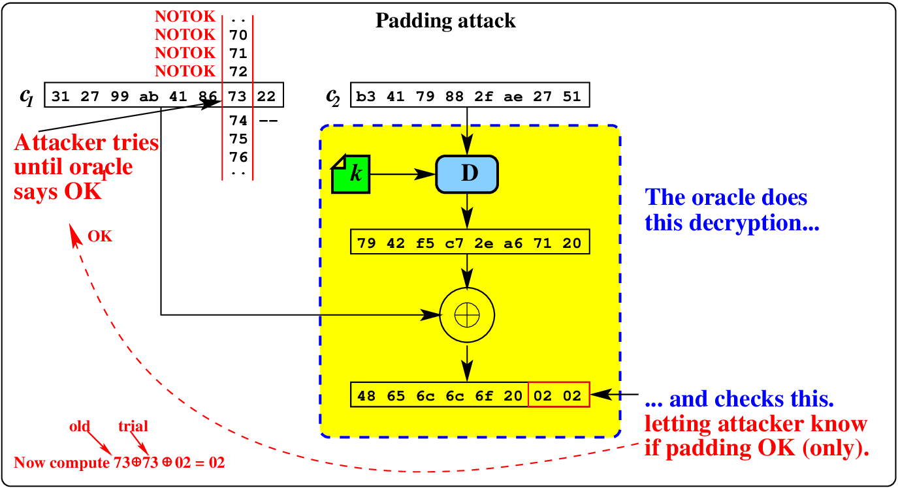
Since we know (now) the last byte
(02), and the original last byte of c_{1}, we can set the last byte.
We try all the second-to-last values in c_{1}, and uncover a second byte.
Using the oracle in an attack...
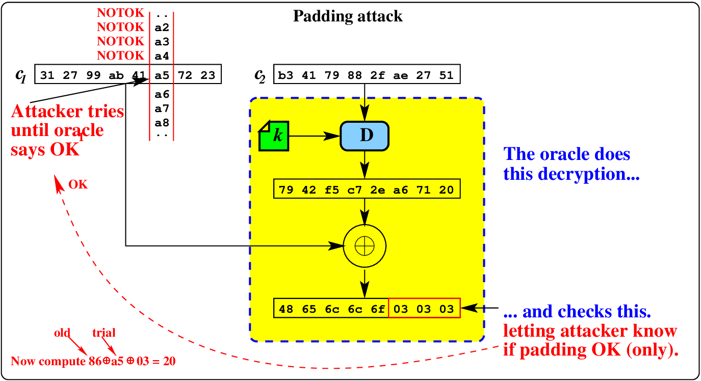
Since we know (now) the last two bytes
(02 02), we can set the last two bytes to 03 03.
Now we try all the third-to-last values
in c_{1} and
uncover 20.
Using the oracle in an attack...
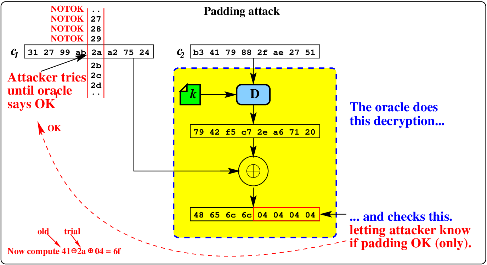
Since we know (now) the last three bytes
(20 02 02), we can set the last three bytes to 04 04 04.
Now we try all the fourth-to-last values
in c_{1} and
uncover 6f.
Using the oracle in an attack...
The attacker keeps moving through the block, and has to try a maximum of 255 trials for each byte recovered, so this is an {\cal O}(n) attack, where n is the number of bytes in the block.
This attack can be avoided if...
- There is no oracle (i.e. the receiving code does not give any indication if the padding is correct or not)
- CFB is used instead.
- A different padding scheme is used...
That is it - a little aside into cracking that makes use of much of what we have learned.